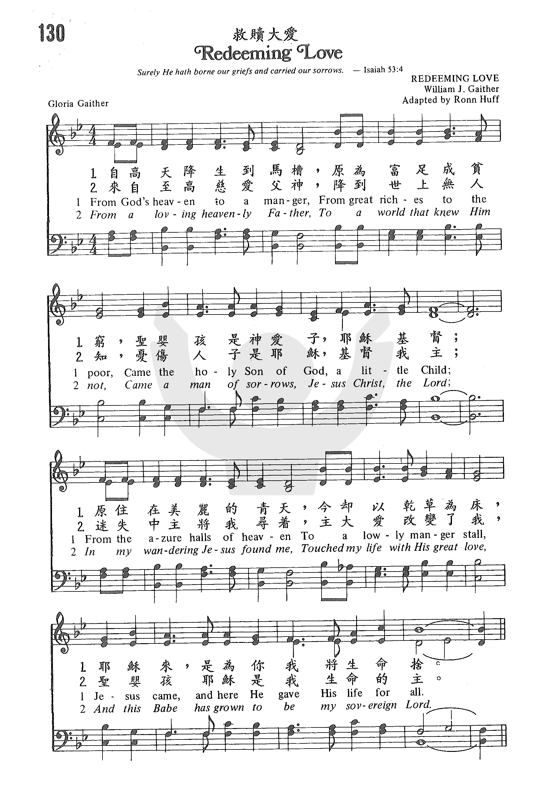
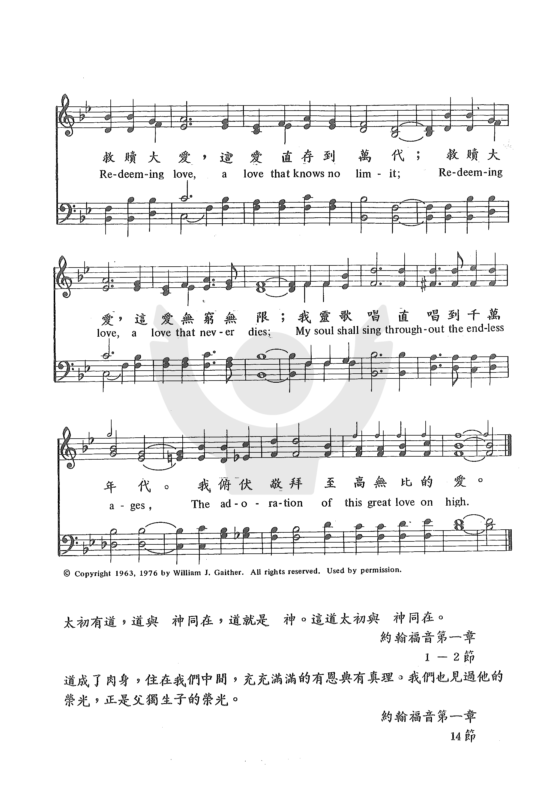

|
|
|
|
Redeeming Love https://suyun2710.wordpress.com/2020/08/02/redeeming-love-%E6%95%91%E8%B5%8E%E5%A4%A7%E7%88%B1/ |
救赎大爱 |
|
https://www.zanmeishige.com/tab/25465.html?songbook=1&index=130


|
|
|
|
|

Redeeming Love 救赎大爱 Fred Bock piano only prelude arrangement https://youtu.be/jbSBf0duHRc -
https://youtu.be/i_6sKxfl-5U -
https://youtu.be/7SsopB81rSk
1254
Redeeming Love 救赎大爱
| Text: | De su trono a un pesebre |
| Author: | Gloria Gaither |
| Tune: | REDEEMING LOVE |
| Arranger: | Ronn Huff |
| Composer: | William J. Gaither |

Tune Information
| Title: | REDEEMING LOVE (Gaither) |
| Composer: | William J. Gaither |
| Arranger: | Ronn Huff |
| Incipit: | 55555 44311 11176 |
| Key: | B♭ Major |
| Copyright: | © Copyright 1963 William J. Gaither |

“REDEEMING LOVE” William Cowper (1731-1800).
“And I saw …them that had gotten the victory over the beast…, having the harps of God” (Rev. 15:2)
INTRO.: A song which pictures the redeemed as having the harps of God is “Redeeming Love.” The text, at least of stanzas 1 and 2, was written by William Cowper (1731-1800). They are two other (not so well known) stanzas of Cowper’s well-known hymn beginning “There Is a Fountain Filled with Blood” which I do not believe have ever been used with the hymn at least here in the United States. I cannot vouch for the third stanza. It is not in my copy of Cowper’s Poetical Works: Complete Edition, which has all the Olney Hymns including “There Is a Fountain.” There are only seven stanzas there. According to a Google search, this eighth stanza (#3 as used here) can be traced back as far as Pious Songs: Social, Prayer, Closet, and Camp Meeting Hymns and Choruses, Third Edition, published in 1836 by Armstrong and Berry. However, this stanza is found in the 2004 Primitive Baptist Hymnal and on Primitive Baptist websites as part of “There Is a Fountain” and attributed to Cowper.
The tune (Milman) was composed by Aldine Silliman Kieffer, who was born on August 1, 1840, near Miami in Saline County, MO, the grandson of Mennonite musician Joseph Funk. The family must have moved to Virginia at some time, because in the American Civil War, Kieffer served in the 10th Virginia Volunteer Infantry. After Funk’s death, he and Ephraim Ruebush (1833-1924), who married Funk’s granddaughter, took over Funk’s publishing and printing business, and started producing new hymn collections for Sunday schools, revival and camp meetings, and home gatherings. These new collections proved to be very popular and lucrative, and consequently with John W. Howe, a minister in the United Brethren Church, they founded the Kieffer, Ruebush, and Company gospel music firm around 1873, which was moved from Singers Glen, VA, to Dayton, VA, in 1878. Kieffer was editor of the Musical Million and Fireside Friend periodical which was published from 1870 until 1914 and became one of the leading tools promoting shape note music for almost a half century. It helped link teachers and students across the country, and published many songs in its pages. One of Kieffer’s most popular song books was The Temple Star, published at Singer’s Glen in 1877. One of his most popular songs was his poem “Twilight is Stealing,” set to music by B. C. Unseld in 1877 and published in The Temple Star.
Around 1890, Kieffer, Ruebush and Company became the Ruebush-Kieffer Company and established itself as one of the earliest and most successful publishers of gospel songs in America. In addition to Temple Star, Kieffer’s other famous works include the Christian Harp and Hours of Fancy, or Vigil and Vision, and Wikipedia lists some nine additional books which he edited. According to Nethymnal, a couple of his best-known texts besides “Twilight Is Falling” are “Jesus Will Let You In” and “The Resurrection,” and Hymnary.org lists a total of 78 texts attributed to Kieffer, who apparently composed this tune as an alternative for “There Is a Fountain” and supplied the refrain. A leading nineteenth century music teacher, publisher, and proponent of shape note musical notation, Kieffer died on November 30, 1904, at his home in Dayton, VA. I first saw this tune used with three of the usual stanzas from Cowper’s hymn in Stamps-Baxter’s 1939 Favorite Hymns and Songs. I have also seen it with Anne Steele’s hymn “To Our Redeemer’s Glorious Name” and Henry Hart Milman’s “O Help Us, Lord! Each Hour of Need.” Neither these stanzas nor this tune has ever appeared in any hymnbooks published by members of the Lord’s church for use among churches of Christ, to my knowledge.
The song looks forward to the future reward awaiting those bought with Jesus’s blood.
I. In stanza 1 it is symbolized as a harp.
Lord I believe Thou hast prepared
(Unworthy though I be)
For me a blood bought free reward–
A golden harp for me.
- This future reward has been prepared by God: Matt, 25:34
- It was purchased with the blood if Christ: Rev. 5:8-9
- We understand that the use of the word “harp” is figurative, but the fact is that the redeemed are described as having harps, so if we can read about it in Revelation, why can we not sing about it?: Rev. 14:1-3
II. In stanza 2 it is identified as endless
’Tis strung and tuned for endless years
And formed by power divine,
To sound in God the Father’s ears
No other name but Thine.
- This harp is tuned for endless years because we shall have eternal life: 1 Jn. 2:25
- It is designed to sound in the ears of God the Father on the throne: Rev. 4:3, 8-11
- And the name that it sounds is that of the Lamb who was slain: Rev. 7:9-14
III. In stanza 3 it is said to be heavenly
In heavenly strains, from every chord,
Shall flow the charming sound,
The praise of my redeeming Lord,
While angels wonder round.
- These will be heavenly strains because our hope is reserved in heaven: 1 Pet. 1:3-5
- The whole idea of harps likely represents simply the praise offered to the redeeming Lord: Rev. 15:1-4
- Even the angels join in this eternal praise: Rev. 5:11-14
CONCL.: The chorus points out that the theme of this song in heaven will be the redeeming love of God and Christ.
Redeeming love has been my theme,
And shall be till I die;
And then I hope to sing this love
In sweeter strains on high.
Certainly in this life we need to express our praise and thanks to the Lord for His great redemption. But our ultimate goal is to be with Him in heaven where we can eternally sing of His “Redeeming Love.”